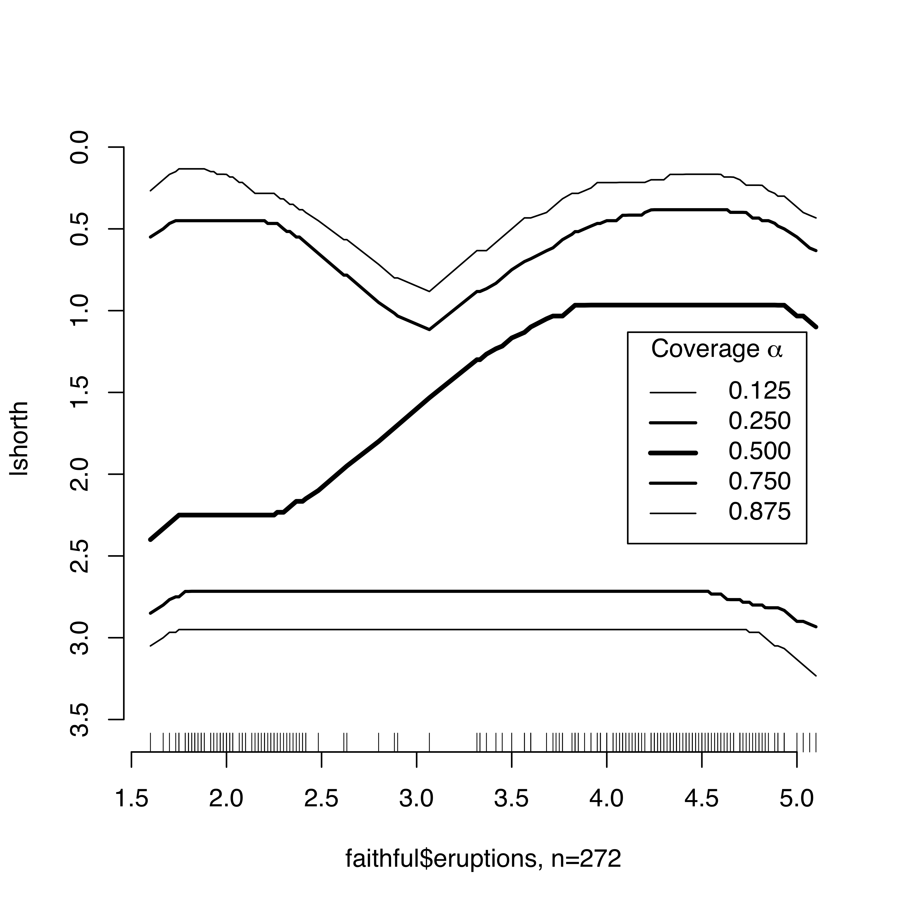

lshorth: The Shorth Plot
Distribution diagnostics based on the length of the shorth, the shortest interval containing a
specified fraction of the distribution. The diagnostics can be used to detect qualitative features,
such as the modality or skewness of a distribution.
This is an R package accompanying
J. Einmahl, M. Gantner, G. Sawitzki:
The Shorth Plot.
Journal of Computational and Graphical Statistics March 2010, Vol. 19, No. 1: 62 - 73.
and
J. Einmahl, M. Gantner, G. Sawitzki:
Asymptotics of the Shorth Plot.
Journal of Statistical Planning and Inference November 2010, Vol. 140, Issue 11, Pages 3003-3012.
To install this package directly within R, type
install.packages("lshorth",repos="http://r-forge.r-project.org")
To install the recent package from source directly within R, type
install.packages("lshorth",repos="http://r-forge.r-project.org",type="source")
Technical notes describing the shorth plot and its statistical background are in
- G. Sawitzki: The Shorth Plot.
- Technical notes. StatLab Heidelberg 1992 (rev. 2007).
The technical notes will be installed as doc/TheShorthPlot.pdf along with the package.
The statistical theory is in
- J. Einmahl, M. Gantner, G. Sawitzki: The Shorth Plot.
- Tilburg University CentER Discussion Papers. 2008.
A revised version is in the publications cited above.
The idea of the shorth plot was first introduced in:
- G. Sawitzki: Diagnostic
Plots for One-Dimensional Data.
- in: Computational Statistics. Papers collected on the Occasion of the
25th Conference
on Statistical Computing at Schloss Reisensburg.
(Edited by P.Dirschedl & R.Ostermann for the Working Groups ... ...
)
Heidelberg, Physica, 1994, ISBN 3-7908-0813-x, p. 237-258.
For the project summary page see here.
Contact information is available on the author's home page.
Updated 2010-08-04 by gs/html.